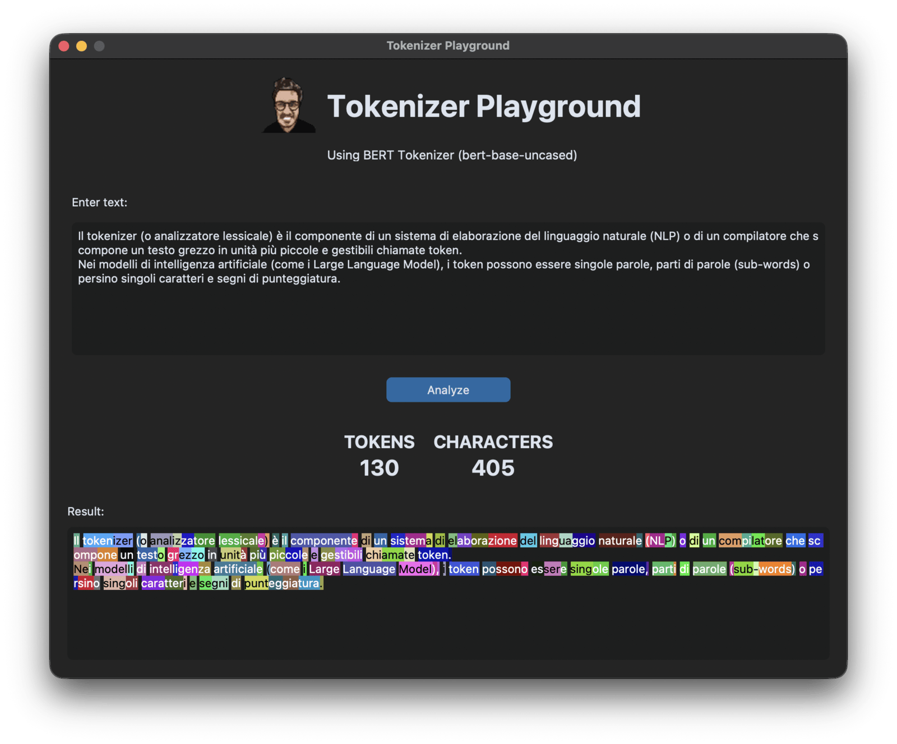

LLM Tokenizer
A TKinter app that calculates the number of tokens of a sentence.
Python
TKinter
A TKinter app that calculates the number of tokens of a sentence.
Tokenizer Playground is a small desktop tool that makes LLM tokenisation visible. Paste any text, press Analyze, and the app shows how many tokens it becomes, how many characters it was, and — the useful part — repaints the text itself with every individual token highlighted.
Instead of listing tokens in a detached list, the colours are applied directly over the original text, so you see exactly where each token starts and ends and how words are split into sub-word pieces.
Each token gets its own colour, and the text colour switches between black and white automatically so every token stays readable.

The counts come from the real tokenizer used by the BERT model rather than an approximation, and the special start and end tokens are left out so the number reflects only your own text. The original layout, including line breaks, is preserved.
The tool is a short Python script using Hugging Face transformers for tokenisation and CustomTkinter for a modern dark interface. The tokenizer is downloaded the first time it runs.
A single ~130-line script holding the tokenisation call, the offset-to-tag mapping, the random colour generator and the luminance-based contrast helper.
Provides the modern Tkinter-based UI — dark theme, CTkTextbox input and result panes, KPI labels and the image header — while keeping the app a dependency-light native desktop window.
AutoTokenizer loads bert-base-uncased and encode_plus(return_offsets_mapping=True) yields both the token ids and the character spans that drive the highlighting.
Each token becomes its own named tag applied to a character range in the result widget — the mechanism behind the per-token background and foreground colours.
Loads the application icon rendered in the header through CTkImage.